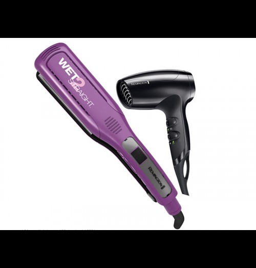
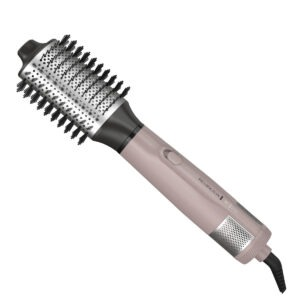
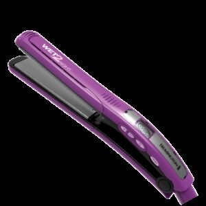
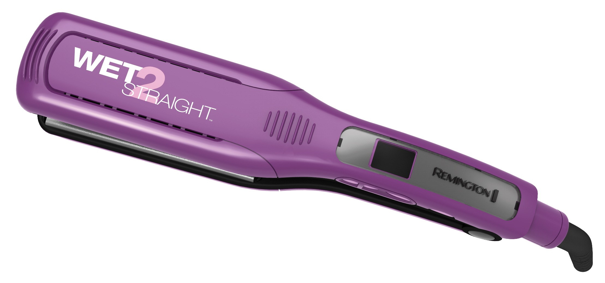
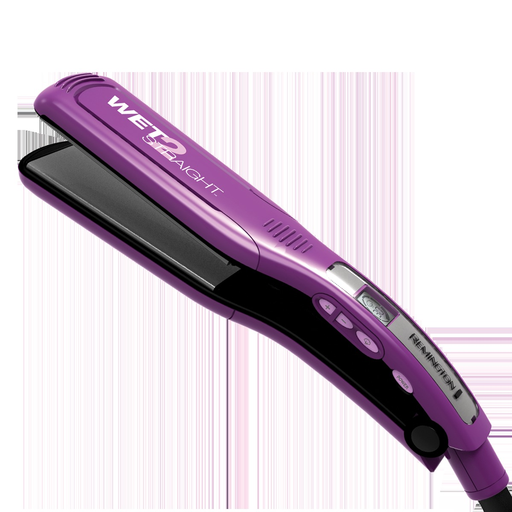

Remington · Modelo S4A500-D3019-F
El modelo S4A500-D3019-F de Remington está pensado para un uso práctico y funcional. Entre sus características destacan Buscá tu producto en; Accesorios; Electromenor; Televisores.
| Modelo | S4A500-D3019-F |
|---|---|
| Marca | REMINGTON |
| Moneda | COL |
Fuente principal: https://boxbagcr.com/producto/remington-combo-secador-y-alisador-ceramica-mas-iones-wet-s8001-d5000-f/